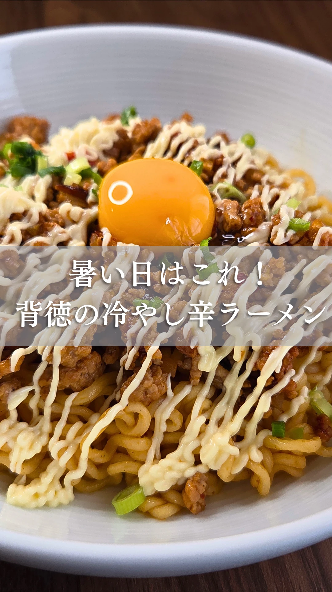
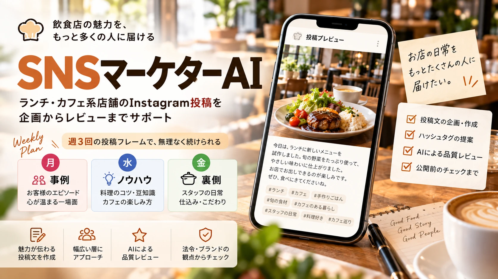

冷やし辛ラーメンのレシピリール
- 誰の
- 自分のInstagramアカウントで公開した動画
- 何のために
- 暑い日に試したくなる、手軽なアレンジレシピを伝えるため
- やったこと
- 企画、撮影、編集のすべて
- 実績
- 閲覧数 3,336回（2026年10月時点、Instagramインサイトより。自アカウントのリールで最高）
取り組んだ内容を、「誰の・何のために・やったこと」でまとめています。
企画から投稿、振り返りまでを続けて担当します。
撮影・編集を、現場の動きに合わせて進めます。
店の強みから、続けられる投稿ネタを考えます。


診断は選択式で、回答内容は送信・保存されません。
診断を試すAIで制作したイメージ画像です。画像内のスマホ画面は一例で、実際の診断画面とは異なります。診断は、12の質問への回答の点数から作業の目安を表示する簡易チェックで、AIが回答やアカウントを分析するものではありません。
飲食業界37年 × Instagram運用・リール動画制作
1988年から2025年まで外食企業に37年間勤務。調理スタッフからキャリアをスタートし、調理長・調理指導員・総料理長を経て、事業部長として最大29店舗の運営を統括しました。現場の調理・店舗運営から、商品開発・スタッフ教育・原価管理・売上損益分析まで、飲食店運営を幅広く経験しています。
現在は、飲食業界の経験にSNS運用・生成AI・動画制作を掛け合わせ、飲食店の「魅力が伝わる発信」を支援します。
自分のアカウントで68本のリールを制作しました（公開中は39本。反応の低いものはアーカイブ）。累計閲覧数は約5万7千回、最高は3,336回です（アーカイブ分を含む。2026年10月時点、Instagramインサイトより）。
まずは今のお店の状況を聞かせてください。ご相談だけでも大丈夫です。